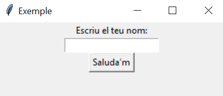

Escritura de dades en Python (EIXIDA)
Funció print()
La funció print() en Python és una de les més utilitzades i serveix per a mostrar missatges, dades o qualsevol eixida per pantalla a la consola.
És molt versàtil i permet personalitzar què i com es mostra la informació.
Per defecte, print() afegeix un salt de línia (\n) al final de cada línia impresa.
>>> a = 3332 + 23223 * 23
>>> print(a)
>>> print(a + 23334)
>>> print("Hola, món!")
La funció print() adquireix més sentit quan s’utilitza en un entorn no interactiu, com ara en programes amb extensió .py que s’executen directament des de la línia d’ordres del sistema operatiu.
==> A partir d'ací, utilitzem VSCode
Per utilitzar VSCode, s'ha de posar el codi en un fitxer, i el fitxer dins d'una carpeta
Primer) Crear carpeta
Segon) Obrir el VSCode, i des del VSCode obrirem un projecte (carpeta)
. ==> Open Folder
Tercer) Crear fitxer (new file)
Quart) Escriure codi
Cinqué) Executar codi (click dret sobre el codi -> Run Python File in Terminal)
.
Tutorial ràpid de VSCode-Python
Personalització amb l'argument end
Per defecte, print() imprimeix un salt de línia al final. Aquest comportament es pot modificar amb el paràmetre end.
- Imprimir en la mateixa línia:
print("Hola", end=" ")
print("Món", end="!") - Sense salt de línia:
for i in range(5):
print(i, end="") # No afegeix salt de línia - Insertar un salt de línia manualment amb
\n:
print("Hola\nMón") Altres consideracions sobre print()
Sintaxi de print()
print(*objects, sep=' ', end='\n', file=sys.stdout, flush=False)- *objects:
- Pot ser un o diversos objectes que es volen imprimir (separats per comes
,). - Els valors es convertixen automàticament a cadenes (amb la funció
str()).
- Pot ser un o diversos objectes que es volen imprimir (separats per comes
- sep (opcional):
- Defineix el separador entre els objectes.
- Per defecte és un espai
' '.
- end (opcional):
- Indica què s’imprimirà al final de l’eixida.
- Per defecte és un salt de línia
'\n'.
- file (opcional):
- Indica el flux on s'enviarà l’eixida.
- Per defecte és la consola (
sys.stdout). - També pots redirigir l’eixida a un fitxer:
with open("eixida.txt", "w") as fitxer: print("Hola món", file=fitxer) - flush (opcional):
- Si es configura com a
True, buida el buffer d’eixida immediatament. - És útil en programes que requerixen imprimir dades en temps real.
- Si es configura com a
Exemples:
txt = ['a', 'b', 'c'] # Açò és una llista (es veurà més endavant)
print(txt) # ['a', 'b', 'c']
print(*txt) # a b c
print(*txt, sep=' --> ') # a --> b --> c
import json
print(json.dumps(mi_diccionari, indent=4))
Literals numèrics
Podem representar números enters en diferents bases:
- Decimal: Representació habitual. Exemples:
345 - Binària: Anteposant
0b. Exemples:0b101001001 - Octal: Anteposant
0o. Exemples:0o546 - Hexadecimal: Anteposant
0x. Exemples:0xf9af9d
Els números reals (amb decimals) es representen separant la part entera de la decimal amb un punt .:
123.50 0.56 .56 12. 12.00També poden usar notació científica:
1.2e3 5e-2Els números complexos (amb part real i imaginària) s'escriuen amb una j o J al final de la part imaginària:
1+2j 8+15JEs pot representar l'infinit amb:
float("inf") float("-inf")Tots són objectes
En Python, tots els elements són objectes, fins i tot els literals. Quan utilitzem un literal, Python crea un objecte amb un identificador únic, un tipus i un valor.
Pots obtindre l'identificador d'un objecte amb la funció id():
x = 100
print(id(x))Literals Strings o Cadenes
Els literals de tipus string van delimitats per cometes simples ' o dobles ", o també per cometes triples (''' o """).
En Python, les cometes dobles i simples són equivalents, encara que en altres llenguatges de programació poden no ser-ho.
print("Això és una cadena") # Correcte
print('Això és una cadena') # CorrecteSi utilitzem cometes simples, la cadena ha de començar i acabar amb cometes simples (no amb dobles), i viceversa:
print("Això és una cadena') # Error de sintaxi
print("Això "és una cadena") # Error de sintaxiCometes triples
Les cometes triples permeten escriure cadenes que ocupen diverses línies, útil quan es vol superar el límit recomanat de 79 caràcters per línia:
print("""Això és una cadena
que ocupa
diverses línies""")També es pot fer amb el caràcter \
El caràcter \ permet continuar la cadena en una altra línia sense trencar-la:
print("Això és una cadena \
que ocupa \
diverses línies")Comportament de les línies amb \
Nota: En aquests casos, el resultat és una cadena contínua, sense salts de línia. Si vols realment afegir salts, cal usar \n.
Inserir cometes del mateix tipus
Si vols utilitzar cometes del mateix tipus que el delimitador dins de la cadena, cal escapar-les amb el caràcter de barra invertida \:
print("Això és una cadena amb cometes dobles: \"exemple\"") Caràcters especials dins de cadenes
\"cometa doble dins de cometes dobles\'cometa simple dins de cometes simples\nsalt de línia\ttabulació horitzontal\vtabulació vertical\\barra invertida literal
print("Hola\tmón") # Hola món
print("Línia 1\nLínia 2") # Línia 1
# Línia 2
print("Ruta: C:\\fitxers\\usuari") # Ruta: C:\fitxers\usuari Inserció de valors dins de cadenes
Python ofereix diversos mecanismes per a inserir valors de variables dins de cadenes de text, com ara:
- Format clàssic:
"Hola %s" % nom - Mètode format():
"Hola {}".format(nom) - f-strings (des de Python 3.6):
f"Hola {nom}"
Formateig de cadenes (strings) en Python
1. Format antic amb % (estil C)
Encara funcional, però menys recomanat. És semblant al format de llenguatges com C.
brand = "HP"
exchangeRate = 1.334
message = 'El preu d’aquest portàtil %s és %d USD i el tipus de canvi és %4.2f USD per 1 EUR' % (brand, 1299, exchangeRate)
print(message)2. Format amb .format()
Permet especificar la posició dels valors i aplicar formatacions:
message = 'El preu d’aquest portàtil {0:s} és {1:d} USD i el tipus de canvi és {2:4.2f} USD per 1 EUR'.format('Apple', 1299, 1.235235245)
print(message)Nota: {0} és el primer argument, {1} el segon, etc.
3. f-strings (des de Python 3.6)
Forma moderna, clara i recomanada:
nom = "Joan"
edat = 25
a, b = 4, 5
pi = 3.141592
monto = 1234567.89
numero = -42
n = 42
print(f"El meu nom és {nom} i tinc {edat} anys.")
print(f"La suma de {a} i {b} és {a + b}.")
print(f"{edat=}") # Depuració: edat=25
print(f"El valor de pi amb 3 decimals és {pi:.3f}.")
print(f"Percentatge: {0.25:.2%}") # 25.00%4. Alineació i formats especials
print(f"|{nom:<10}|") # A l'esquerra
print(f"|{nom:>10}|") # A la dreta
print(f"|{nom:_>10}|") # A la dreta amb "_"
print(f"|{nom:^10}|") # Centrat
print(f"|{nom:*^10}|") # Centrat amb "*"
print(f"Decimal: {n}, Binari: {n:b}, Hexadecimal: {n:x}, Octal: {n:o}")
print(f"Amb separador de milers: {monto:,.2f}")
print(f"Amb signe explícit: {numero:+d}") # -42
print(f"Amb zeros a l'esquerra: {42:06d}") # 000042Prefixos especials en cadenes (strings) en Python
En Python, una lletra que apareix abans d’una cadena (com r, f, b o u) indica que la cadena tindrà un comportament especial.
r o R – Cadena crua (raw string)
No interpreta caràcters d’escapament com \n o \t. Molt útil per a expressions regulars o rutes de fitxers en Windows.
raw_string = r"C:\Usuaris\Joan\Documents"
print(raw_string) # C:\Usuaris\Joan\Documentsf o F – Cadena formatejada (f-string)
Permet incrustar variables o expressions dins la cadena amb {}. Disponible des de Python 3.6.
nom = "Joan"
print(f"Hola, {nom}!") # Hola, Joan!b o B – Cadena de bytes (byte string)
Representa una cadena de bytes (no Unicode). Es fa servir per treballar amb dades binàries.
byte_string = b"Hola"
print(byte_string) # b'Hola'u o U – Cadena Unicode
Era necessari en Python 2 per indicar una cadena Unicode. En Python 3 totes les cadenes són Unicode per defecte, per tant, aquest prefix és redundant.
Prefixos combinats
Pots combinar prefixos per combinar comportaments:
path = "Usuaris"
cad = rf"C:\{path}\Joan"
print(cad) # C:\Usuaris\JoanLectura de dades per teclat en Python (ENTRADA)
En qualsevol llenguatge de programació és essencial la entrada de dades a un programa perquè aquest puga reaccionar de diferents maneres. Aquestes dades poden servir com a base per a càlculs o per a prendre decisions, realitzant una acció o una altra segons el valor introduït.
Ús de la funció input()
En Python, utilitzem input() per demanar a l’usuari que introduïsca dades per teclat. Aquestes dades es poden usar posteriorment dins del programa.
numero1 = input("Digue'm el primer número: ") # Aquí, numero1 serà una cadena (string)
# El programa es quedarà esperant que l'usuari escriga un valor i premeta intro.
# Aquesta entrada s'assignarà a la variable numero1 com a text.
numero1 = int(numero1) # Cal convertir-la a enter si volem fer operacions numèriques.
print(numero1, "+", numero2, "=", numero1 + numero2)
print("{numero1} + {numero2} = ", numero1 + numero2) # No fa interpolació real Exemple d’error comú
n1 = input("Digue'm el primer número: ")
n2 = input("Digue'm el segon número: ")
print("La suma és", n1 + n2) # Açò farà una concatenació de cadenes!
# Què ha passat???
print("La suma és", int(n1) + int(n2)) # Açò sí que suma nombres correctament Entrada de múltiples valors separats per comes
També podem demanar a l’usuari que introduïsca diversos valors separats per comes (o altres caràcters), i convertir-los a una llista de números:
entrada = input("Introdueix números separats per comes: ")
numeros = entrada.split(',') # Separa cada valor utilitzant la coma com a separador
# Convertim cada valor a enter, eliminant espais en blanc
numeros = [int(num.strip()) for num in numeros]
print("Llista de números:", numeros) Conclusió
- La funció
input()sempre retorna cadenes de text. - És necessari convertir aquestes cadenes a nombres si volem fer càlculs.
- Podem usar
split()istrip()per processar entrades múltiples.
Lectura de dades des de la crida al programa Python
Una altra manera d'entrar dades en un programa és utilitzar els mateixos paràmetres de la crida al programa a través de la línia de comandes.
En Python, pots passar paràmetres a un programa des de la línia de comandes utilitzant els mòduls sys o argparse. Aquestes eines permeten que el teu programa reba arguments externs, cosa que és útil per personalitzar l'execució sense haver de modificar el codi del programa.
Passar paràmetres amb sys
Un exemple bàsic utilitzant sys.argv:
# arxiu: programa.py
import sys
# Mostrar els arguments
print("Arguments rebuts:", sys.argv)
# Accedir als arguments individuals
if len(sys.argv) > 1:
print("Primer argument:", sys.argv[1])
else:
print("No s'han proporcionat arguments.") Execució en la terminal:
$ python3 programa.py hola mundo # es passen dos arguments a programa.py
Passar paràmetres amb argparse
El mòdul argparse ofereix una forma més robusta i flexible per gestionar arguments. Permet definir opcions, descripcions, verificar tipus i gestionar errors automàticament.
# arxiu: programa.py
import argparse
# Crear un objecte ArgumentParser
parser = argparse.ArgumentParser(description="Un programa d'exemple per rebre paràmetres.")
# Definir els arguments que s'accepten
parser.add_argument('nom', help="El teu nom") # Argument posicional
parser.add_argument('--edat', type=int, help="La teva edat (opcional)") # Argument opcional
# Parsejar els arguments
args = parser.parse_args()
# Utilitzar els arguments
print(f"Hola, {args.nom}!")
if args.edat:
print(f"Tens {args.edat} anys.") Execució en la terminal:
$ python3 programa.py Juan --edat 25
Gestió de Fitxers en Python
📂 Què és un fitxer en Python?
Un fitxer en Python és una entitat externa (com un arxiu de text, CSV, JSON, etc.) que el teu programa pot llegir, escriure o modificar per a emmagatzemar o recuperar informació de manera permanent .
Persitència de dades
La persistència de dades és la capacitat de guardar informació de manera permanent, de forma que no es perda quan s’apaga el programa o l’ordinador.
Dit d'una altra manera: són dades que persistixen més enllà de la memòria RAM, i que poden ser recuperades en futures execucions.
Mètodes per aconseguir persistència en Python
Fitxers
- Fitxers de text (
.txt) - Fitxers CSV
- Fitxers JSON
- Fitxers binaris (
.dat)
Bases de dades
- SQLite (ja integrada en Python)
- MySQL, PostgreSQL, etc. (amb connectors externs)
Serialització (guardar objectes)
- Amb el mòdul
pickle - Amb
jsonper a estructures simples
Definició de fitxer
En informàtica, un fitxer (o arxiu) és un conjunt de dades guardades al disc dur o a un altre dispositiu d’emmagatzematge. En Python, podem interactuar amb fitxers mitjançant la funció integrada open().
Operacions bàsiques amb fitxers en Python
| Operació | Mètode Python |
|---|---|
| Obrir un fitxer | open("nom_fitxer", "mode") |
| Llegir dades | read(), readline(), readlines() |
| Escriure dades | write(), writelines() |
| Tancar el fitxer | close() (o with per tancar automàticament) |
La funció open() forma part de la biblioteca estàndard de Python, per la qual cosa es pot utilitzar sense necessitat d’importar res.
Obrir un fitxer
La funció open() accepta dos arguments principals:
- Nom del fitxer: El nom o camí del fitxer que vols obrir o crear.
- Mode d'obertura: Indica com vols accedir al fitxer (lectura, escriptura, etc.).
Modes comuns d’obertura
"r": Lectura (per defecte). Dona error si el fitxer no existeix."w": Escriptura. Sobreescriu el fitxer si existeix o el crea si no."a": Afegir. Escriu al final del fitxer si existeix, o el crea si no."x": Crear. Crea un nou fitxer i dona error si ja existeix."b": Mode binari (es pot combinar amb altres, per exemple"rb")."t": Mode text (per defecte, combinable amb"r","w", etc.).
Lectura de fitxers
Llegir tot el contingut
with open("fitxer.txt", "r") as fitxer:
contingut = fitxer.read()
print(contingut)
Llegir línia per línia
with open("fitxer.txt", "r") as fitxer:
for linia in fitxer:
print(linia.strip()) # Elimina els salts de línia
Llegir com a llista de línies
with open("fitxer.txt", "r") as fitxer:
linies = fitxer.readlines()
print(linies)
Escriptura en fitxers
Escriure una sola línia
with open("fitxer.txt", "w") as fitxer:
fitxer.write("Hola, món\n")
Escriure múltiples línies
linies = ["Primera línia\n", "Segona línia\n", "Tercera línia\n"]
with open("fitxer.txt", "w") as fitxer:
fitxer.writelines(linies)
Afegir contingut a un fitxer existent
with open("fitxer.txt", "a") as fitxer:
fitxer.write("Nova línia afegida\n")
Consideracions importants sobre fitxers en Python
-
Ús de
with: L’ús del blocwithassegura que el fitxer es tanque automàticament, encara que hi haja errors. És preferible a fer serviropen()iclose()manualment. -
Gestió d’excepcions:
És recomanable utilitzar blocs
try-exceptper evitar errors si el fitxer no existeix o hi ha problemes d'accés.try: with open("fitxer_inexistent.txt", "r") as fitxer: contingut = fitxer.read() except FileNotFoundError: print("El fitxer no existeix.") -
Codificació:
Si treballes amb caràcters especials (com accents o símbols), és important indicar la codificació:
with open("fitxer.txt", "r", encoding="utf-8") as fitxer: contingut = fitxer.read()
Guardar objectes en fitxers amb pickle
Per guardar i recuperar objectes complexos (com diccionaris, llistes, etc.) es pot usar el mòdul pickle, que permet serialitzar i deserialitzar objectes.
Serialitzar (guardar) un objecte
Converteix l’objecte a una seqüència de bytes i el guarda al fitxer.
import pickle
dades = {"nom": "Joan", "edat": 25, "ciutat": "València"}
with open("dades.pkl", "wb") as fitxer:
pickle.dump(dades, fitxer)
Deserialitzar (recuperar) un objecte
Recupera l’objecte des del fitxer.
import pickle
with open("dades.pkl", "rb") as fitxer:
dades_carregades = pickle.load(fitxer)
print(dades_carregades)
Nota: Quan es fa servir pickle, cal obrir els fitxers en mode binari ("wb" per escriure, "rb" per llegir).
Exemple pràctic: Guardar i recuperar objectes amb pickle
Guardar un objecte en un fitxer
import pickle
# Suposem que existeix una classe Persona
persona = Persona("Ana", 25)
# Guardar l’objecte en un fitxer
with open("persona.pkl", "wb") as fitxer: # 'wb' per a escriptura en mode binari
pickle.dump(persona, fitxer)
print("Objecte guardat al fitxer 'persona.pkl'.")
Recuperar un objecte des d’un fitxer
import pickle
# Llegir l’objecte des del fitxer
with open("persona.pkl", "rb") as fitxer: # 'rb' per a lectura en mode binari
persona_recuperada = pickle.load(fitxer)
print("Objecte recuperat del fitxer:")
print(persona_recuperada) # Exemple de resultat: Ana, 25 anys
Guardar i recuperar múltiples objectes
Pots guardar diversos objectes (per exemple, una llista de persones) i recuperar-los posteriorment.
Guardar diversos objectes
import pickle
persones = [
Persona("Ana", 25),
Persona("Lluís", 30),
Persona("Maria", 28)
]
# Guardar la llista d’objectes en un fitxer
with open("persones.pkl", "wb") as fitxer:
pickle.dump(persones, fitxer)
print("Llista d’objectes guardada al fitxer 'persones.pkl'.")
Recuperar diversos objectes
import pickle
# Llegir la llista d’objectes des del fitxer
with open("persones.pkl", "rb") as fitxer:
persones_recuperades = pickle.load(fitxer)
print("Objectes recuperats:")
for persona in persones_recuperades:
print(persona)
Nota: Assegura’t que la definició de la classe Persona estiga disponible en el moment de deserialitzar l’objecte, ja que pickle necessita accedir a la classe original per reconstruir l’instància.
Consideracions importants
-
Mode binari:
- Usa
"wb"per a escriure en binari i"rb"per a llegir en binari.
- Usa
-
Compatibilitat:
- Els objectes serialitzats són específics de la versió de Python i de l’estructura de les classes. Canviar la classe després de guardar els objectes pot causar errors en recuperar-los.
-
Seguretat:
- No carregues fitxers
picklede fonts no fiables, ja que podrien executar codi maliciós.
- No carregues fitxers
-
Serialització amb JSON:
- Si els objectes són simples (com diccionaris o llistes), pots usar
jsonen lloc depickle. No obstant això, JSON no suporta objectes complexos directament. import json,json.dump(), etc. — queda fora d’aquest curs.
- Si els objectes són simples (com diccionaris o llistes), pots usar
🖥️ GUI amb Tkinter en Python
Una GUI (Interfície Gràfica d'Usuari) permet interactuar amb el programa mitjançant elements com botons, caixes de text, etiquetes, etc. Tkinter és la llibreria estàndard de Python per a fer-ho.
Estructura bàsica
import tkinter as tk
finestra = tk.Tk()
finestra.title("La meua primera GUI")
finestra.mainloop()🧩 Widgets comuns
Label– Mostra textEntry– Entrada d’usuariButton– Executa accionsText– Caixa de text granCheckbutton– Caixa de seleccióRadiobutton– Opcions exclusivesListbox– Llista seleccionable
🧪 Exemple amb diversos widgets
import tkinter as tk
def mostrar_salutacio():
nom = entrada.get()
etiqueta_resultat.config(text=f"Hola, {nom}!")
finestra = tk.Tk()
finestra.title("Exemple complet")
etiqueta = tk.Label(finestra, text="Escriu el teu nom:")
etiqueta.pack()
entrada = tk.Entry(finestra)
entrada.pack()
boto = tk.Button(finestra, text="Saluda’m", command=mostrar_salutacio)
boto.pack()
etiqueta_resultat = tk.Label(finestra, text="")
etiqueta_resultat.pack()
finestra.mainloop()📐 Sistemes de posicionament
pack()– Organització vertical o horitzontalgrid()– Organització en taula (files i columnes)place()– Ubicació exacta per coordenades